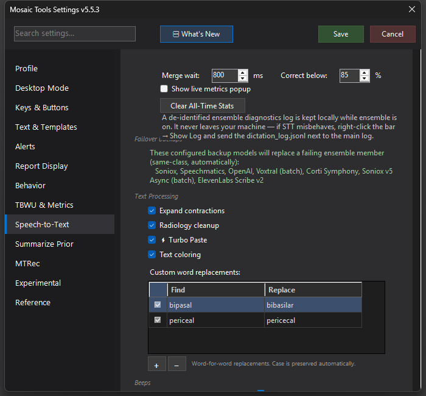

Turbo Paste
Near-instant pasting of dictated text that quietly refines itself in place as the full ensemble result arrives.

What it does
Normally the ensemble waits a beat (the merge wait) so every engine can vote before text is pasted. Turbo Paste collapses that wait: the first transcript appears in your report almost instantly, and the other engines' corrections catch up a moment later, editing the text in place. You get single-engine speed with full-ensemble accuracy — the end state of the text is the same, it just arrives sooner.
How to turn it on / set it up
Settings → Speech-to-Text → Text Processing → ⚡ Turbo Paste. It's on by default when Custom STT is enabled.
Using it
Dictate normally. Text lands as fast as the driver engine can produce it; occasionally you'll see a word or phrase snap to a corrected version a second or two later as the slower voters and back-patch corrections land. If you also enable Text coloring (the checkbox right below it), dictated words are tinted by ensemble confidence — amber for uncertain, orange for low confidence, magenta for a flagged non-word — so your eye is drawn to exactly the spots most likely to change or need a glance. The two settings are independent: you can have instant paste without coloring, or coloring without Turbo Paste.
Tips & gotchas
- If watching text mutate bothers you, turn Turbo Paste off — you'll get the fully merged result in one shot, just slightly later.
- Corrections only ever replace what the ensemble concluded was misheard; a guard prevents late results from duplicating sentences already in the report.
- Turbo Paste changes when text appears, not what gets processed — Process Report sees the same final transcript either way.